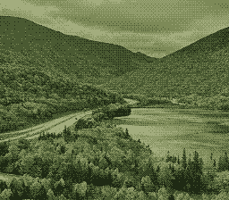

Four shades of green, a D-pad, a film camera and a darkroom. No accounts, no ads. It works offline.
Free and open source. Made for phones.
Every pixel on the screen is one of four greens, like the LCDs of the eighties. Apps are drawn with them and photos are dithered into them.
#1F2A14#4A5A32#7D8A58#A3AD7ELoad a roll of 8, 12 or 16 frames. The viewfinder is a live four-tone dither. When the roll is done, the darkroom develops it once, in colour.

A diary that opens on today, a calendar with lunar dates, an English dictionary, and a book reader that looks words up for you.
A Game Boy player. Bring your own ROMs.
Ask an AI for a small program, paste it in, run it. Connect your own AI line in Settings (DeepSeek, Kimi, Qwen, SiliconFlow or OpenRouter) and it writes the program on the spot; Revise changes it with one more sentence, and keeps the old version. Tape4 can arrange with it too.
The whole handheld in one zip file. Restore it on a new phone.
Games, puzzles and tools from the community. Each one installs in a second and runs in a sandbox with no internet.
A cover and a short film of each, before you install anything. One tap opens it on your phone.
Browse the galleryThe spec is short and frozen at 1.0. Hand the prompt to your AI assistant, try the app in the dev harness, send a pull request.
<!-- index.html -->
<script>
PAD.on("press", function (b) {
if (b === "a") PAD.sfx("coin");
});
PAD.save({ best: 42 });
PAD.music.play({ bpm: 120,
p1: "o4 c8 e8 g8 >c4" });
</script>
There is no account to make and nothing to sign in to. Notes, photos and saves live in the phone's own storage.
Open it once and it keeps working on a plane or in the hills.
On an iPhone, open Lo-PDA in Safari, tap Share, then Add to Home Screen. It runs full screen, like an app.
All of it is open source. Read it, fork it, learn from it.